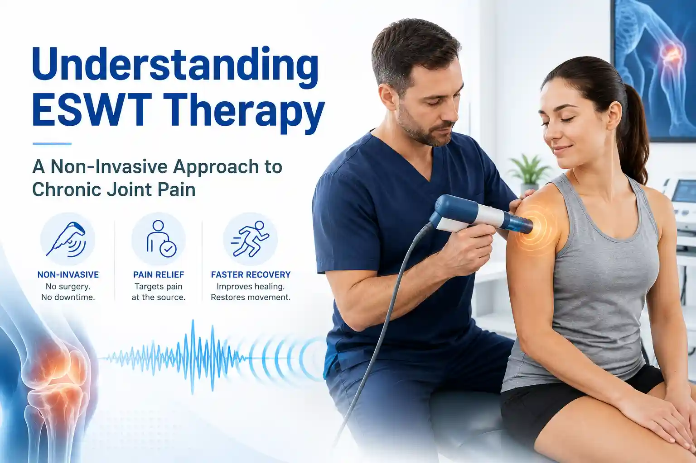

Medically Reviewed by
DR. MIR JAWAD ZAR KHANMBBS, MS - Orthopedic
M.CH-(Ortho) Joint
Replacement surgeon
Understanding ESWT Therapy: A Non-Invasive Approach to Chronic Joint Pain
Living with chronic joint pain can feel like an endless cycle of frustration. You may have tried resting, applying ice packs, stretching, and relying on over-the-counter pain medications, only to find the aching and stiffness return the moment you try to resume your normal activities. When traditional conservative methods fail, many patients mistakenly believe that their only remaining option is an invasive surgery with a long, painful recovery period.
Fortunately, modern medical technology has bridged the gap between basic physical therapy and major surgery. If you are struggling with persistent musculoskeletal issues and searching for an effective, non-surgical joint pain treatment, the answer might lie in a revolutionary procedure known as ESWT.
ESWT treatment, also known as Extracorporeal Shock Wave Therapy, has rapidly become one of the most sought-after regenerative treatments in orthopedics today. It offers patients a way to stimulate their body's own natural healing processes without needles, without incisions, and without downtime.
If you have been looking for an ESWT Therapy Near me in Hyderabad, it is essential to understand exactly how this therapy works, what conditions it treats, and what you can expect during a session. In this comprehensive patient guide, we will explore the science behind Extracorporeal Shock Wave Therapy Hyderabad and explain why consulting the best pain medicine specialist in Hyderabad can help you reclaim a pain-free life.
What Exactly is Extracorporeal Shock Wave Therapy (ESWT)?
Despite the word "shock" in its name, ESWT therapy for joint pain does not involve electricity or electrical shocks. Instead, "Extracorporeal" means outside the body, and "Shock Wave" refers to high-energy acoustic sound waves.
Originally developed in the 1980s to safely break down kidney stones without surgery, a process called lithotripsy, medical researchers soon discovered that these same acoustic waves had profound healing effects on bones, tendons, and muscular tissues.
Today, orthopedic specialists use a specialized hand-held device to deliver these targeted acoustic waves directly through the skin and into the exact site of chronic pain or damaged tissue. These high-energy pulses penetrate deep into the joint capsule, tendons, and ligaments to trigger a biological response that restarts a stalled healing process.
The Science: How Does ESWT Treatment Heal Joint Pain?
When you sustain an injury, your body normally mounts an acute inflammatory response to heal the area. However, in cases of chronic pain like long-standing tendonitis or severe joint wear-and-tear, the body essentially gives up on healing the area, and the tissue becomes stagnant and painful.
ESWT treatment works by creating micro-trauma at the cellular level. This might sound intimidating, but it is actually exactly what your body needs to reboot its regenerative systems. Here is the step-by-step biological process of how it works:
1. Neovascularization (New Blood Vessel Formation)
Healthy blood flow is absolutely critical for tissue repair. Chronic injuries often suffer from reduced blood supply. The acoustic waves from the ESWT device create microscopic tears in the damaged tissue, which stimulates the body to produce new blood vessels, also known as neovascularization, in the area. This sudden rush of nutrient-rich, oxygenated blood accelerates the healing of tendons and bones.
2. Breakdown of Calcification
Over time, chronic inflammation in tendons can lead to the buildup of calcium deposits, which feel like hard, painful lumps called calcific tendinitis. These calcium buildups severely restrict movement. The high-energy acoustic waves act like a microscopic jackhammer, safely breaking down and shattering these calcium deposits into tiny particles that your body's lymphatic system can naturally absorb and flush away.
3. Reversal of Chronic Inflammation
Mast cells are one of the key components of the inflammatory process. ESWT therapy stimulates mast cell activity, which eventually leads to a decrease in chronic inflammation and a profound reduction in localized pain.
4. Stimulation of Collagen Production
Collagen is the primary building block of your body’s connective tissues, including tendons, ligaments, and cartilage. Shockwave therapy stimulates the production of new collagen fibers, which are then laid down in a healthy, organized pattern. This makes the newly healed tissue denser, stiffer, and much more resilient to future injuries.
Top Conditions Treated with ESWT Therapy
Extracorporeal Shock Wave Therapy is highly versatile and is used by the best pain medicine specialist in Hyderabad to treat a wide array of chronic orthopedic conditions. It is particularly effective for tissues that typically have poor blood supply and are notoriously slow to heal.
1. Plantar Fasciitis and Heel Spurs
If you experience sharp, stabbing pain in the bottom of your heel when you take your first steps in the morning, you likely have plantar fasciitis. ESWT is widely considered one of the most effective non-surgical treatments for chronic heel pain and for breaking down painful heel spurs.
2. Tennis Elbow and Golfer’s Elbow (Epicondylitis)
Chronic pain on the outside, known as tennis elbow, or inside, known as golfer's elbow, of the elbow joint is caused by micro-tears in the forearm tendons. ESWT stimulates collagen repair in these stubborn tendons, allowing athletes and office workers alike to grip objects without agonizing pain.
3. Shoulder Calcific Tendinitis and Rotator Cuff Pain
When calcium deposits form within the rotator cuff tendons, raising your arm becomes incredibly painful. Shockwave therapy effectively breaks down these calcifications and heals the underlying tendon tears, restoring your shoulder's range of motion.
4. Achilles Tendinopathy
The Achilles tendon is the largest tendon in the body, but it has a very poor blood supply, making chronic inflammation, also called tendinopathy, very difficult to treat. ESWT drives new blood flow directly into the Achilles, promoting rapid tissue regeneration and allowing runners to get back on the track.
5. Knee Osteoarthritis
Using shockwave therapy for arthritis is an emerging and highly successful application. By reducing joint inflammation, stimulating subchondral bone repair, and promoting the health of the joint capsule, ESWT can significantly reduce the deep, aching pain associated with knee osteoarthritis, delaying the need for a total joint replacement.
The Major Benefits of Non-Surgical Joint Pain Treatment
Why are so many patients and doctors turning to ESWT over traditional treatments? The benefits of this regenerative approach are substantial:
- Completely Non-Invasive: There are no incisions, no needles, and no surgical risks such as infection or scarring.
- No Anesthesia Required: Because the procedure is non-surgical, you do not have to worry about the risks or grogginess associated with general or local anesthesia.
- Zero Downtime: You can literally walk into the clinic for your session and walk right back out to resume your day. There is no hospital stay and no need for crutches.
- High Clinical Success Rate: Numerous clinical studies have shown that ESWT has a success rate of 70% to 90% in resolving chronic soft-tissue pain that has not responded to other conservative treatments.
- Fast Treatment Sessions: A typical shockwave session takes only 15 to 20 minutes to complete.
What to Expect During Your ESWT Session in Hyderabad
If you have booked an appointment for Extracorporeal Shock Wave Therapy Hyderabad, it is natural to wonder what the experience will be like. The process is straightforward and highly patient-friendly.
- Preparation: You will sit or lie down comfortably in the treatment room. The specialist will locate the exact source of your pain through physical palpation or ultrasound guidance.
- Applying the Gel: A clear, water-based acoustic gel is applied to your skin over the treatment area. This gel is essential as it allows the sound waves to travel smoothly through your skin without losing energy.
- Delivering the Shockwaves: The doctor will place the ESWT applicator wand directly against the gel-covered skin. When the machine is turned on, you will hear a rapid clicking or tapping sound.
- The Sensation: You will feel a strong, rapid tapping or pulsing sensation deep within the tissue. While it can be slightly uncomfortable, especially if the area is very tender, it is generally well-tolerated. Your doctor can easily adjust the intensity of the machine to ensure the treatment remains within your comfort level.
- Post-Treatment Care: Once the 15-minute session is over, the gel is wiped off, and you can go home. You may experience mild soreness or redness in the area for a day or two, which is a sign that the healing cascade has successfully been triggered.
Why You Need the Right Specialist for Your Care
While ESWT is a fantastic technology, the machine is only as effective as the doctor operating it. Achieving the best possible outcome requires precise targeting of the damaged tissue. If the acoustic waves are not directed exactly at the site of the micro-tears or calcifications, the treatment will be ineffective.
When searching for the best pain medicine specialist in Hyderabad, look for an orthopedic doctor who has deep anatomical knowledge and extensive experience with regenerative medicine. A top-tier specialist will comprehensively evaluate your medical history, utilize advanced imaging like MRI or ultrasound to pinpoint the exact pathology, and develop a customized ESWT protocol tailored to your specific injury.
Chronic joint and tendon pain can slowly rob you of the activities you love, turning everyday movements into a struggle. You do not have to accept chronic pain as a normal part of life, and you do not necessarily have to resort to invasive surgery to find relief.
ESWT treatment represents a massive leap forward in regenerative orthopedics, offering a safe, fast, and highly effective non-surgical joint pain treatment. By harnessing the power of high-energy acoustic waves, you can stimulate your body's natural healing abilities, break down painful calcifications, and restore strength to your joints and tendons. If conservative treatments have failed you, it is time to explore the regenerative power of shockwave therapy.
Take the First Step Toward Better Joint Health!
Why suffer in silence when expert help and advanced non-surgical treatments are right here? Connect with Dr. Mir Jawad Zar Khan if you are facing stiffness, swelling, or chronic orthopedic issues in Hyderabad. Let an internationally trained specialist in Hyderabad diagnose the root cause of your pain and provide you with targeted ESWT treatment.
Dial +91 998 963 5555 to schedule your expert consultation today and start your journey toward a pain-free, active life!
FAQs About ESWT
1. How many ESWT sessions will I need?
While some patients feel immediate pain relief after their first session, the standard protocol usually involves 3 to 5 sessions, spaced about one week apart. This allows the biological healing process to build upon itself week after week.
2. How quickly will I see the final results?
Tissue regeneration takes time. While you will likely notice a significant reduction in pain within a few weeks of starting treatment, the maximum healing benefits and structural tissue repair usually peak around 8 to 12 weeks after your final session.
3. Are there any side effects of shockwave therapy?
Side effects are incredibly rare and very mild. Some patients may experience slight temporary redness, mild bruising, or a temporary increase in soreness in the treated area for 24 to 48 hours as the body's inflammatory healing response is triggered.
4. Can I continue playing sports or working out during my ESWT treatment?
Your doctor will likely advise you to avoid high-impact activities, heavy lifting, or strenuous sports that directly stress the treated joint for about 48 hours after each session. Light activities and normal daily walking are perfectly fine.
5. Is ESWT safe for everyone?
ESWT is exceptionally safe for the vast majority of patients. However, it is generally not recommended for pregnant women, patients with severe blood clotting disorders, individuals taking heavy blood thinners, or patients with active bone tumors or infections in the treatment area.


DR. MIR JAWAD ZAR KHAN
MBBS, MS - Orthopedic, M.CH-(Ortho) Joint Replacement Surgeon
As the visionary Chairman and Managing Director of Germanten Hospitals, Hyderabad, Dr. Mir Jawad Zar Khan brings over two decades of surgical leadership to the field. He is dedicated to transforming lives through evidence-based treatments, advanced robotic technology, and a commitment to patient quality of life.